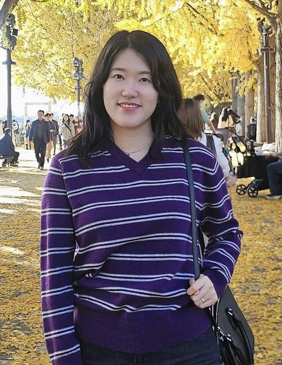

Gayoung Lee
Research Scientist, NAVER AI Lab
I am a research scientist at NAVER AI Lab. I received my B.S. and M.S. degrees from KAIST, where I was advised by Prof. Junmo Kim and Prof. Yu-Wing Tai. My current research focuses on video generation and on leveraging video model priors, including video-generation-based world models.
Experience
- Research Scientist, NAVER AI LabAug. 2020 – Present
- Research Scientist, NAVER CLOVA OCRSep. 2019 – Aug. 2020
- Research Scientist, NAVER WEBTOON Corp.Aug. 2017 – Aug. 2019
Selected Publications
* Equal contribution † Corresponding author
Pygmalion Effect in Vision: Image-to-Clay Translation for Reflective Geometry Reconstruction
Seoul World Model: Grounding World Simulation Models in a Real-World Metropolis
StyleKeeper: Prevent Content Leakage using Negative Visual Query Guidance
Enhancing Creative Generation on Stable Diffusion-based Models
Direct Unlearning Optimization for Robust and Safe Text-to-Image Models
3D-aware Blending with Generative NeRFs
Generator Knows What Discriminator Should Learn in Unconditional GANs
Few-shot Compositional Font Generation with Dual Memory
Unpaired Sketch-to-Line Translation via Synthesis of Sketches
ELD-Net: An Efficient Deep Learning Architecture for Accurate Saliency Detection
Deep Saliency with Encoded Low Level Distance Map and High Level Features